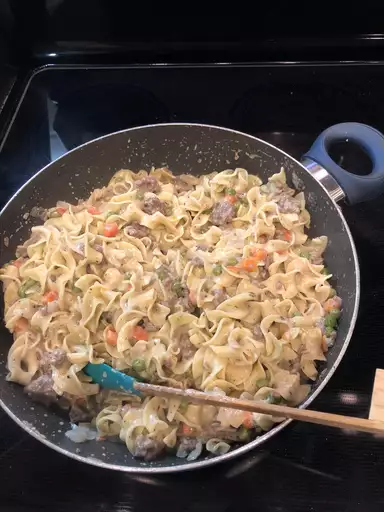

Simple Beef Stroganoff

Description
This rich and creamy ground beef stroganoff with egg noodles is super simple to prepare, and ready to serve in under 30 minutes making it a great choice for busy weeknights. Garnish with freshly chopped parsley for added color and flavor.
Ingredients
- 1 (8 ounce) package egg noodles
- 1 pound ground beef
- 1 (10.5 ounce) can fat-free condensed cream of mushroom soup
- 1 tablespoon garlic powder
- ½ cup sour cream
- salt and ground black pepper to taste
Steps
- Saute ground beef in a large skillet over medium heat until browned and crumbly; 5 to 10 minutes.
- At the same time, fill a large pot with lightly salted water and bring to a rapid boil. Cook egg noodles at a boil until tender yet firm to the bite, 7 to 9 minutes. Drain and set aside.
- Drain and discard any fat from the cooked beef. Stir condensed soup and garlic powder into the beef. Simmer for 10 minutes, stirring occasionally.
- Remove beef from the heat. Add egg noodles and stir to combine. Stir in sour cream and season with salt and pepper.